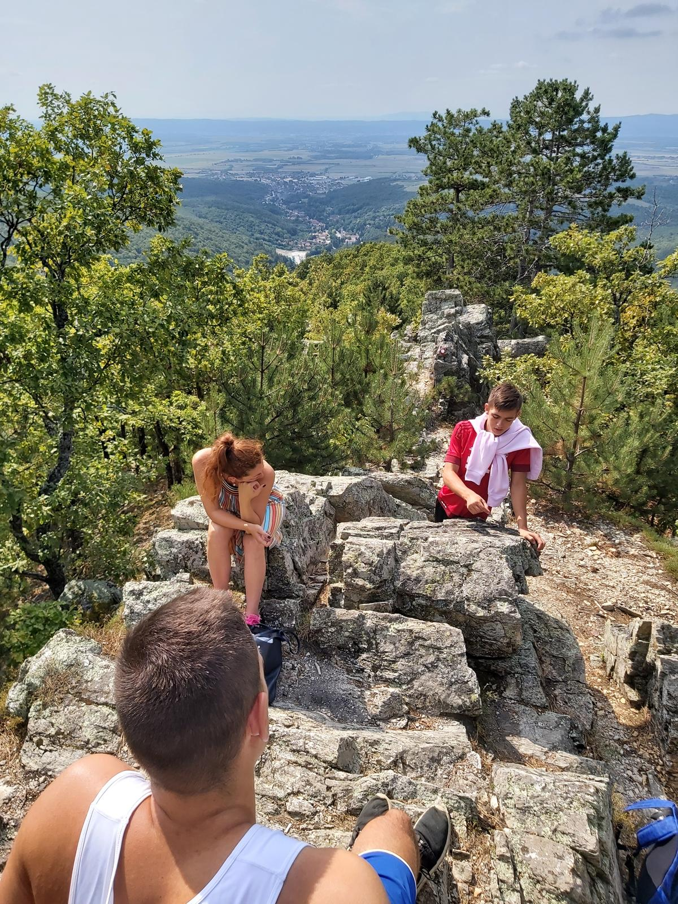
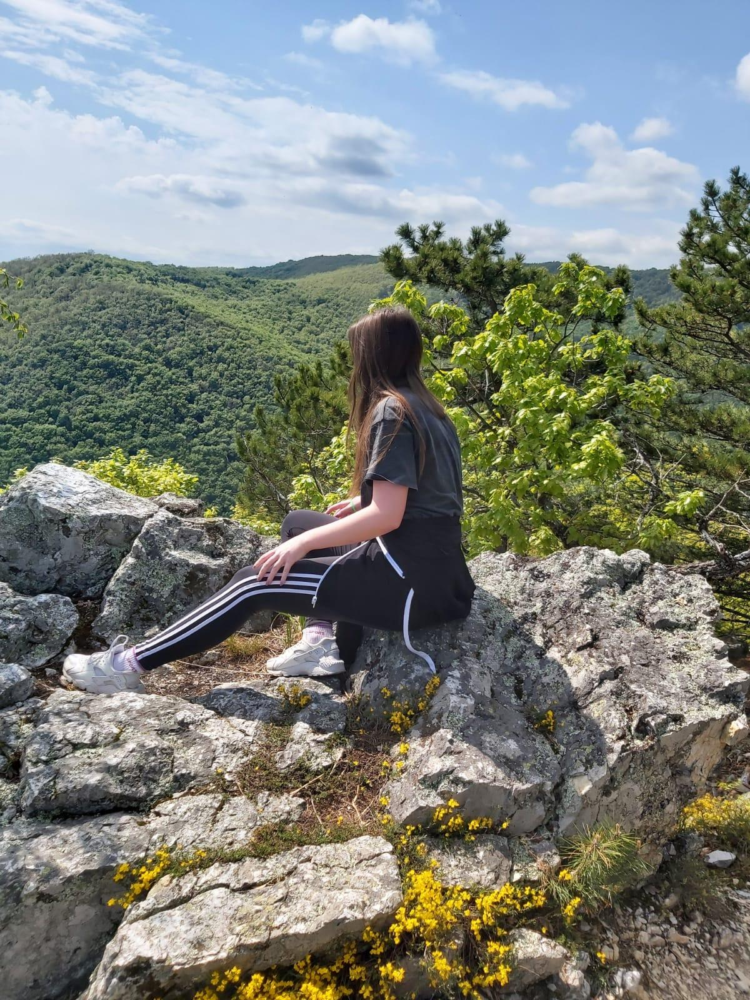
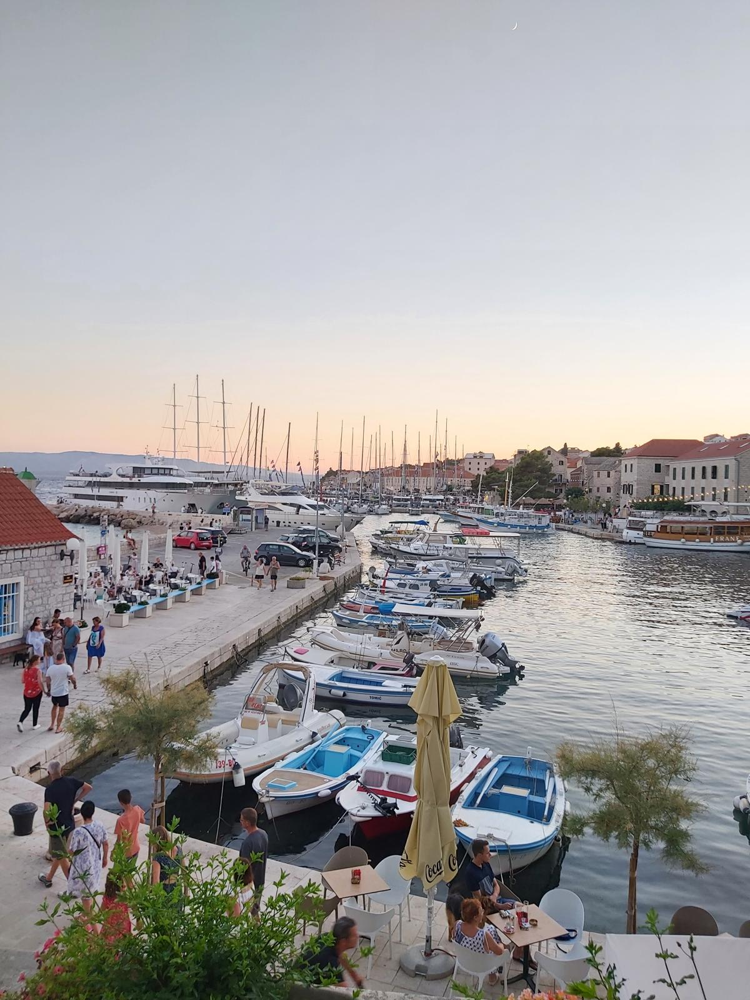
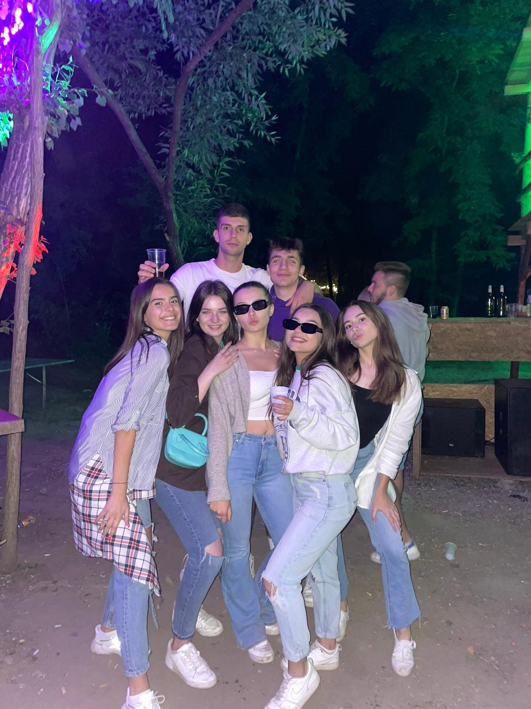
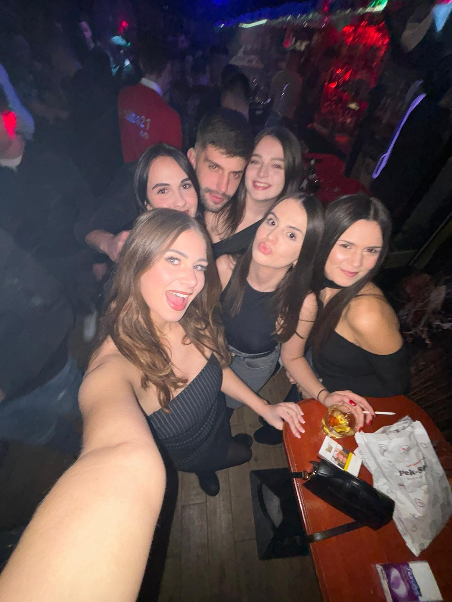
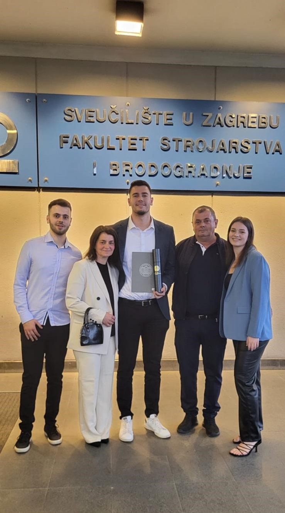
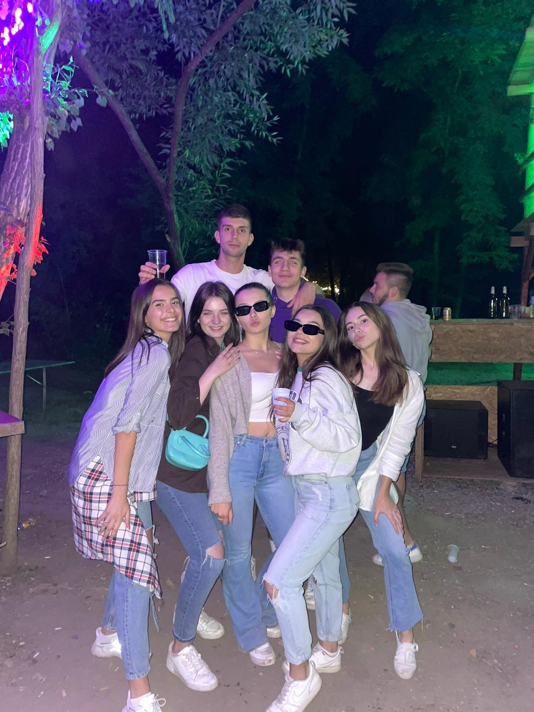
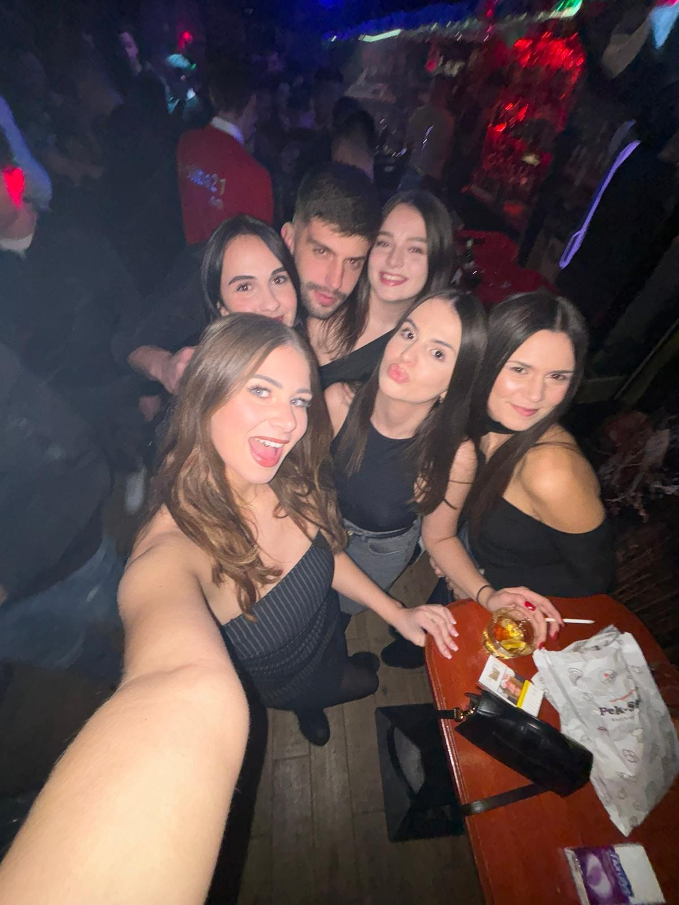
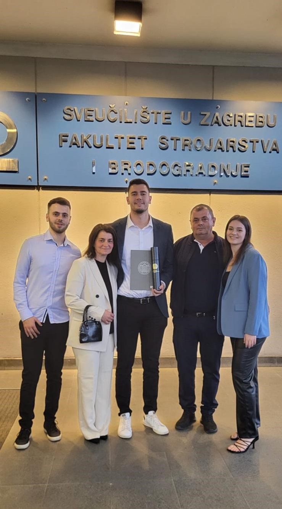

Moje ime je Ana. Dolazim iz malog mjesta kraj Požege, Velika. Velika je zapravo jako mala i okružena je prirodnim ljepotama koje mi nikada neće dosaditi. Šetnje kroz Papuk, penjanje na stari grad, miris svježeg zraka i zvukovi prirode razlozi su zašto toliko volim mjesto u kojem živim. Iako je Velika mjesto koje je meni nezamjenjivo, ljubav prema moru i Dalmaciji je također prisutna. More za mene predstavlja slobodu, mir i neiscrpan izvor inspiracije. Kada je riječ o izlascima, biram Požegu. Od opuštenih večeri u kafićima do dinamičnih noći u klubovima, grad ima nešto za svaki ukus i raspoloženje. Sve nabrojano me usrećuje, ali najdraži aspekt moga života je ipak moja obitelj!
Stvari koje volim izražene u slikama
   




